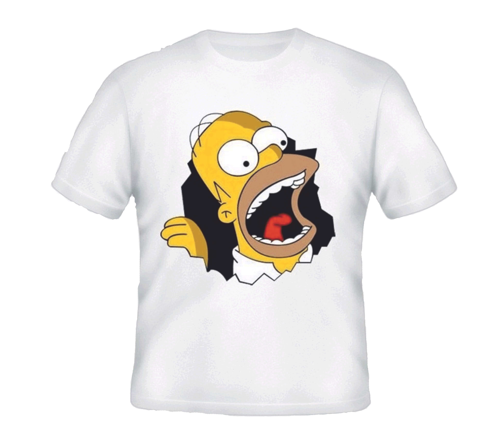
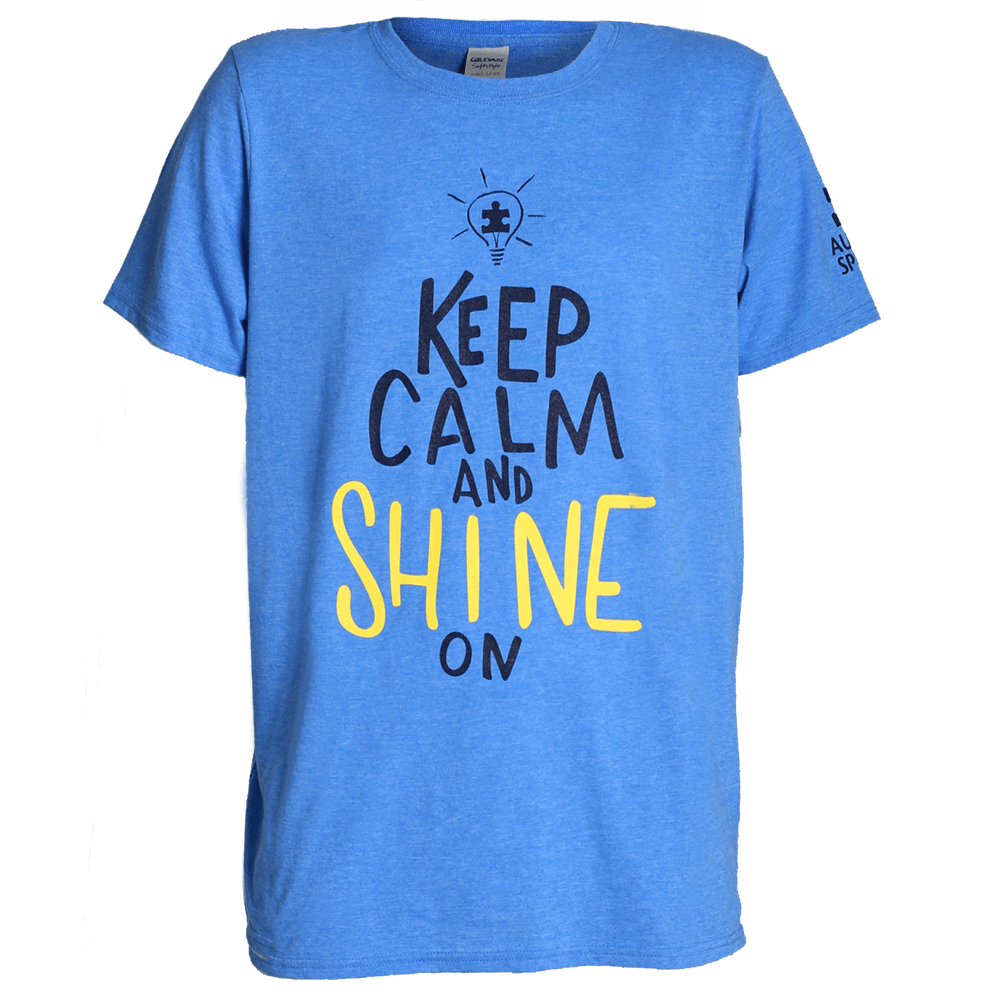
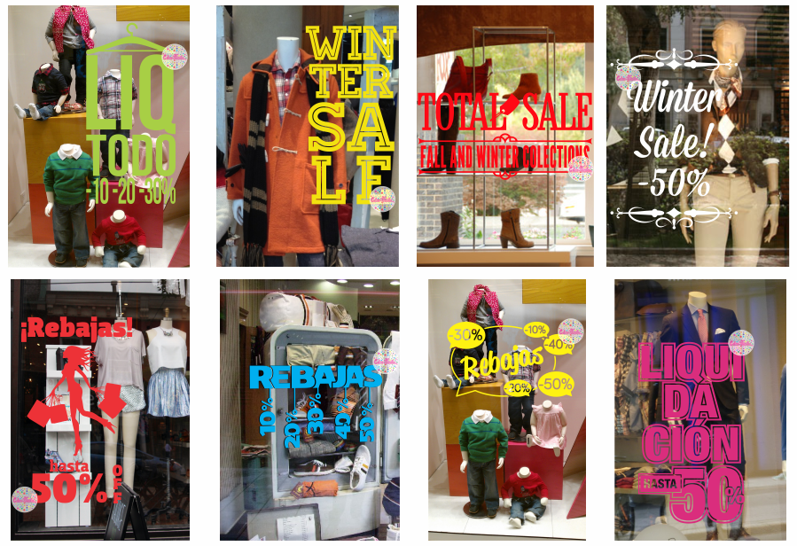
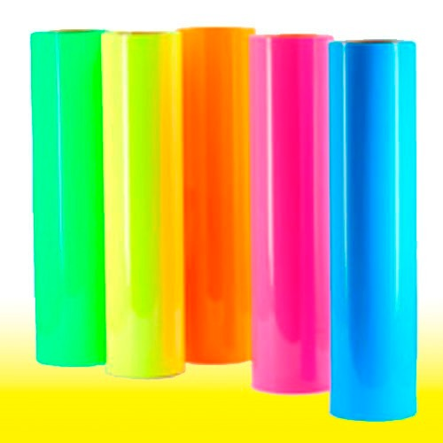
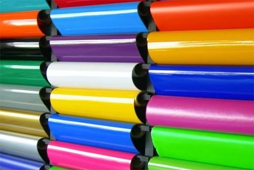

La sublimación es la técnica para el marcaje de objetos mediante transferencia de la tinta al objeto, con la aplicación de calor. La sublimación permite transferir imágenes y diseños a gran variedad de objetos
Estampados en remeras de algodón, se realiza el sublimado en fibras plásticas y luego son adheridas en remera de algodón de cualquier color. Es una técnica muy moderna y somos unos de los pocos que la realizamos en el país.
Esta técnica se realiza utilizando un tipo de vinilo especial que es termotransferible. El vinilo viene en una amplia variedad de colores. Al vinilo termotransferible tradicional se lo suele llamar Flex, existen de este tipo especiales, como el Flock que tiene una terminación símil felpa agradable al tacto, el Glitter que luce similar a la brillantina, los colores Flúo y también los reflectivos, ideales para indumentaria de uso nocturno.
La versatilidad y la resistencia ofrecidas por un material como el vinilo proporcionan un amplísimo abanico de posibilidades en cuanto a su uso. Trataremos de explicarte de forma sencilla las diferencias entre el vinilo de corte
El vinilo de corte es una película autoadhesiva que se utiliza para la decoración y la rotulación de superficies planas y onduladas tanto en interiores como en exteriores. Este tipo de vinilos son troquelados con un plóter (aparato de corte que permite cortar imágenes de gran tamaño) y tienen el mismo color por la superficie adhesiva que por la parte exterior.
Estos vinilos fluorescentes son ideales para la realización de grafismos promocionales de corta duración como expositores, escaparates de tiendas o stands ¡Entre los cinco colores que ofrecemos encontrará el idóneo para producir un impacto
Imprimimos calcomanías por demanda en bajas tiradas. Muchas veces se presenta la necesidad de reproducir calcos de Marcas o elementos que vienen de fábrica en motos y/o automoviles. Ya sea por restauración o decorativo este método permite rehacer una calco original en cuestón de minutos sin la necesidad de producir grandes cantidades y sin precios elevados.
Este tipo de vinilo es uno de los más economicos y más usados. Su utilidad es muy variada desde calcomanias, carteles, señalización, imanes hasta murales o fachadas. Se utiliza en exterior e interior. De color blanco en el frente y el dorso (Autoadhesivo) viene en acabado Mate/ Brillante.